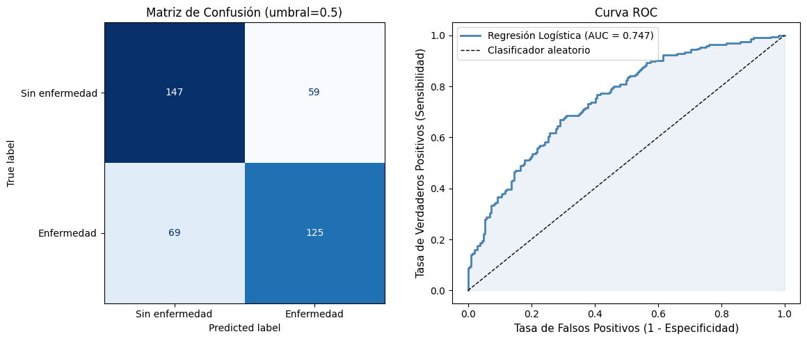

15-2: Repaso — Regresión Logística y Modelos de Conteo#
Curso: Modelos de Análisis Estadístico (MAE) — Universidad de los Andes
Docente: Prof. Alejandra Tabares
Semana: 15 — Repaso Final
1. Regresión Logística — Resumen#
Modelo#
¿Por Qué No Usar MCO para Resultados Binarios?#
El modelo de probabilidad lineal (MPL) con MCO puede predecir \(\hat{\pi} < 0\) o \(\hat{\pi} > 1\), y la varianza del error es heteroscedástica. El enlace logit restringe las predicciones al intervalo \((0,1)\).
Interpretación — Tres Escalas#
Escala |
Expresión |
Interpretación de \(\beta_j\) |
|---|---|---|
Log-momios (logit) |
\(\mathbf{x}^\top\boldsymbol{\beta}\) |
Aditivo: \(\beta_j\) = cambio en log-momios por unidad de \(x_j\) |
Razón de momios |
\(e^{\beta_j}\) |
Multiplicativo: RM = factor por el que cambian los momios por unidad de \(x_j\) |
Probabilidad |
\(1/(1+e^{-\mathbf{x}^\top\boldsymbol{\beta}})\) |
No lineal; depende de los valores de todas las \(x\) |
Estimación — Máxima Verosimilitud#
La log-verosimilitud para \(n\) observaciones binarias:
Sin solución en forma cerrada; se resuelve iterativamente mediante IRLS (Mínimos Cuadrados Iterativamente Reponderados).
Evaluación del Modelo#
Métrica |
Qué mide |
|---|---|
Devianza |
\(-2\ell(\hat{\boldsymbol{\beta}})\); menor es mejor |
AIC |
\(-2\ell + 2p\) |
\(R^2\) de McFadden |
\(1 - \ell(\hat{\boldsymbol{\beta}})/\ell(\boldsymbol{\beta}_0)\) |
Matriz de confusión |
Exactitud, sensibilidad (recall), especificidad, VPP |
AUC-ROC |
Probabilidad de que el modelo clasifique un positivo aleatorio por encima de un negativo aleatorio; 0.5 = aleatorio, 1.0 = perfecto |
import numpy as np
import pandas as pd
import statsmodels.api as sm
import statsmodels.formula.api as smf
import matplotlib.pyplot as plt
from sklearn.metrics import (
confusion_matrix, ConfusionMatrixDisplay,
roc_curve, roc_auc_score
)
import warnings
warnings.filterwarnings('ignore')
np.random.seed(2025)
n = 400
# Simular resultado binario: disease = 1
age = np.random.normal(55, 12, n)
bmi = np.random.normal(27, 5, n)
smoking = np.random.binomial(1, 0.3, n)
# Logit verdadero: log-momios = -6 + 0.06*age + 0.08*bmi + 1.2*smoking
logit_true = -6 + 0.06 * age + 0.08 * bmi + 1.2 * smoking
pi_true = 1 / (1 + np.exp(-logit_true))
disease = np.random.binomial(1, pi_true, n)
df = pd.DataFrame({'disease': disease, 'age': age, 'bmi': bmi, 'smoking': smoking})
print('Conjunto de datos simulado: disease ~ age + bmi + smoking')
print(f'Prevalencia del resultado: {disease.mean():.3f} ({disease.sum()} casos de {n})')
print(df.head(8).round(2).to_string(index=False))
Conjunto de datos simulado: disease ~ age + bmi + smoking
Prevalencia del resultado: 0.485 (194 casos de 400)
disease age bmi smoking
0 53.89 29.12 0
0 63.81 27.11 1
1 37.73 30.59 0
0 47.04 26.13 0
0 53.79 29.98 0
1 80.76 27.51 0
0 71.72 30.76 0
0 52.51 20.62 1
# ── Ajustar regresión logística ────────────────────────────────────────────────────────
logit_model = smf.logit('disease ~ age + bmi + smoking', data=df).fit()
print(logit_model.summary())
# Razones de momios con IC 95%
or_table = pd.DataFrame({
'OR': np.exp(logit_model.params),
'OR_lower': np.exp(logit_model.conf_int()[0]),
'OR_upper': np.exp(logit_model.conf_int()[1]),
'p-value': logit_model.pvalues
}).round(4)
print('\nTabla de Razones de Momios (IC 95%)')
print('='*55)
print(or_table.to_string())
print('\nEjemplo de interpretación:')
or_smoking = np.exp(logit_model.params['smoking'])
print(f' RM tabaquismo = {or_smoking:.3f}: los fumadores tienen {or_smoking:.2f} veces los momios')
print(' de enfermedad en comparación con los no fumadores, manteniendo edad e IMC constantes.')
Optimization terminated successfully.
Current function value: 0.590787
Iterations 6
Logit Regression Results
==============================================================================
Dep. Variable: disease No. Observations: 400
Model: Logit Df Residuals: 396
Method: MLE Df Model: 3
Date: Fri, 20 Mar 2026 Pseudo R-squ.: 0.1471
Time: 17:25:13 Log-Likelihood: -236.31
converged: True LL-Null: -277.08
Covariance Type: nonrobust LLR p-value: 1.443e-17
==============================================================================
coef std err z P>|z| [0.025 0.975]
------------------------------------------------------------------------------
Intercept -6.1482 0.925 -6.644 0.000 -7.962 -4.335
age 0.0530 0.010 5.055 0.000 0.032 0.074
bmi 0.1021 0.025 4.153 0.000 0.054 0.150
smoking 1.4949 0.252 5.933 0.000 1.001 1.989
==============================================================================
Tabla de Razones de Momios (IC 95%)
=======================================================
OR OR_lower OR_upper p-value
Intercept 0.0021 0.0003 0.0131 0.0
age 1.0545 1.0330 1.0764 0.0
bmi 1.1075 1.0554 1.1622 0.0
smoking 4.4588 2.7211 7.3062 0.0
Ejemplo de interpretación:
RM tabaquismo = 4.459: los fumadores tienen 4.46 veces los momios
de enfermedad en comparación con los no fumadores, manteniendo edad e IMC constantes.
# ── Matriz de confusión y curva ROC ───────────────────────────────────────────────────
y_pred_prob = logit_model.predict(df)
threshold = 0.5
y_pred = (y_pred_prob >= threshold).astype(int)
y_true = df['disease'].values
cm = confusion_matrix(y_true, y_pred)
tn, fp, fn, tp = cm.ravel()
accuracy = (tp + tn) / (tp + tn + fp + fn)
sensitivity = tp / (tp + fn) # recall
specificity = tn / (tn + fp)
ppv = tp / (tp + fp) # precision
auc = roc_auc_score(y_true, y_pred_prob)
print('Resumen de la Matriz de Confusión (umbral = 0.5)')
print('='*45)
print(f' Verdaderos Positivos (VP): {tp}')
print(f' Verdaderos Negativos (VN): {tn}')
print(f' Falsos Positivos (FP): {fp}')
print(f' Falsos Negativos (FN): {fn}')
print(f' Exactitud: {accuracy:.3f}')
print(f' Sensibilidad (Recall): {sensitivity:.3f}')
print(f' Especificidad: {specificity:.3f}')
print(f' VPP (Precisión): {ppv:.3f}')
print(f' AUC-ROC: {auc:.3f}')
# Gráficos
fig, axes = plt.subplots(1, 2, figsize=(12, 5))
# Mapa de calor de la matriz de confusión
disp = ConfusionMatrixDisplay(confusion_matrix=cm, display_labels=['Sin enfermedad', 'Enfermedad'])
disp.plot(ax=axes[0], colorbar=False, cmap='Blues')
axes[0].set_title(f'Matriz de Confusión (umbral={threshold})', fontsize=12)
# Curva ROC
fpr, tpr, thresholds = roc_curve(y_true, y_pred_prob)
axes[1].plot(fpr, tpr, color='steelblue', linewidth=2,
label=f'Regresión Logística (AUC = {auc:.3f})')
axes[1].plot([0, 1], [0, 1], 'k--', linewidth=1, label='Clasificador aleatorio')
axes[1].fill_between(fpr, tpr, alpha=0.1, color='steelblue')
axes[1].set_xlabel('Tasa de Falsos Positivos (1 - Especificidad)', fontsize=11)
axes[1].set_ylabel('Tasa de Verdaderos Positivos (Sensibilidad)', fontsize=11)
axes[1].set_title('Curva ROC', fontsize=12)
axes[1].legend(fontsize=10)
plt.tight_layout()
plt.show()
Resumen de la Matriz de Confusión (umbral = 0.5)
=============================================
Verdaderos Positivos (VP): 125
Verdaderos Negativos (VN): 147
Falsos Positivos (FP): 59
Falsos Negativos (FN): 69
Exactitud: 0.680
Sensibilidad (Recall): 0.644
Especificidad: 0.714
VPP (Precisión): 0.679
AUC-ROC: 0.747

2. Regresión de Poisson — Resumen#
Modelo#
Interpretación — Razones de Tasas#
Por un aumento de una unidad en \(x_j\), el conteo esperado es multiplicado por \(e^{\hat{\beta}_j}\), manteniendo fijos los demás predictores.
Supuestos Clave#
Log-linealidad: \(\ln(\mu)\) es lineal en los predictores
Independencia: las observaciones son independientes
Equidispersión: \(\text{Var}(Y_i) = E[Y_i] = \mu_i\) (media = varianza)
Desplazamiento (Offset)#
Al modelar tasas (conteos por unidad de exposición \(t_i\)):
El término \(\ln(t_i)\) se incluye como desplazamiento con coeficiente fijo en 1.
Sobredispersión#
Si \(\hat{D}/(n-p-1) \gg 1\) (digamos, \(> 1.5\)), la varianza supera a la media — sobredispersión. Esto infla los estadísticos de prueba y produce intervalos de confianza demasiado estrechos.
Soluciones:
Enfoque |
Modelo |
Cuándo |
|---|---|---|
Escalar errores estándar |
Quasi-Poisson |
Sobredispersión leve |
Varianza adicional explícita |
Binomial Negativa |
Sobredispersión moderada-grave |
Verificar inflación de ceros |
Poisson con inflación de ceros / ZINB |
Exceso de ceros |
# ── Simular datos de conteo y ajustar Poisson + Binomial Negativa ─────────────────────
np.random.seed(42)
n_cnt = 300
x1 = np.random.normal(0, 1, n_cnt)
x2 = np.random.binomial(1, 0.4, n_cnt) # covariable binaria
mu_pois = np.exp(1.5 + 0.6 * x1 + 0.8 * x2)
# Conteos sobredispersos: usar Binomial Negativa (dispersión r = 3)
r_nb = 3.0
p_nb = r_nb / (r_nb + mu_pois)
y_nb = np.random.negative_binomial(r_nb, p_nb, n_cnt)
# También generar conteos con distribución Poisson para comparación
y_pois = np.random.poisson(mu_pois, n_cnt)
df_cnt = pd.DataFrame({'y_nb': y_nb, 'y_pois': y_pois, 'x1': x1, 'x2': x2})
print('Resumen del conjunto de datos de conteo')
print(f' y_nb — media: {y_nb.mean():.2f}, var: {y_nb.var():.2f},',
f'var/media = {y_nb.var()/y_nb.mean():.2f} (sobredisperso si >> 1)')
print(f' y_pois — media: {y_pois.mean():.2f}, var: {y_pois.var():.2f},',
f'var/media = {y_pois.var()/y_pois.mean():.2f} (equidisperso \u2248 1)')
# Poisson en datos sobredispersos
pois_nb = smf.glm('y_nb ~ x1 + x2', data=df_cnt,
family=sm.families.Poisson()).fit()
# Binomial Negativa en datos sobredispersos
nb_model = smf.glm('y_nb ~ x1 + x2', data=df_cnt,
family=sm.families.NegativeBinomial()).fit()
# Poisson en datos correctamente distribuidos
pois_ok = smf.glm('y_pois ~ x1 + x2', data=df_cnt,
family=sm.families.Poisson()).fit()
print('\n' + '='*65)
print('GLM Poisson en conteos SOBREDISPERSOS (y_nb)')
print('='*65)
print(pois_nb.summary2().tables[1].to_string())
disp_ratio = pois_nb.deviance / pois_nb.df_resid
print(f'\n Devianza residual / gl = {disp_ratio:.2f}',
'\u2192 SOBREDISPERSO (debería ser ~1)' if disp_ratio > 1.5 else '\u2192 OK')
print('\n' + '='*65)
print('GLM Binomial Negativa en conteos SOBREDISPERSOS (y_nb)')
print('='*65)
print(nb_model.summary2().tables[1].to_string())
print('\n' + '='*65)
print('GLM Poisson en conteos EQUIDISPERSOS (y_pois)')
print('='*65)
print(pois_ok.summary2().tables[1].to_string())
disp_ratio_ok = pois_ok.deviance / pois_ok.df_resid
print(f'\n Devianza residual / gl = {disp_ratio_ok:.2f}',
'\u2192 SOBREDISPERSO' if disp_ratio_ok > 1.5 else '\u2192 OK (equidisperso)')
Resumen del conjunto de datos de conteo
y_nb — media: 6.90, var: 55.51, var/media = 8.04 (sobredisperso si >> 1)
y_pois — media: 7.66, var: 42.48, var/media = 5.54 (equidisperso ≈ 1)
=================================================================
GLM Poisson en conteos SOBREDISPERSOS (y_nb)
=================================================================
Coef. Std.Err. z P>|z| [0.025 0.975]
Intercept 1.387335 0.037267 37.227114 2.486145e-303 1.314293 1.460376
x1 0.608049 0.022007 27.630061 4.845968e-168 0.564917 0.651182
x2 0.804435 0.045564 17.655210 9.278721e-70 0.715132 0.893738
Devianza residual / gl = 3.24 → SOBREDISPERSO (debería ser ~1)
=================================================================
GLM Binomial Negativa en conteos SOBREDISPERSOS (y_nb)
=================================================================
Coef. Std.Err. z P>|z| [0.025 0.975]
Intercept 1.402484 0.084513 16.594915 7.585122e-62 1.236842 1.568126
x1 0.604109 0.066306 9.110971 8.164807e-20 0.474153 0.734066
x2 0.777199 0.129542 5.999594 1.978112e-09 0.523301 1.031097
=================================================================
GLM Poisson en conteos EQUIDISPERSOS (y_pois)
=================================================================
Coef. Std.Err. z P>|z| [0.025 0.975]
Intercept 1.473602 0.035652 41.333207 0.000000e+00 1.403726 1.543478
x1 0.621437 0.020870 29.776436 7.888401e-195 0.580532 0.662342
x2 0.824331 0.043321 19.028422 9.919490e-81 0.739423 0.909239
Devianza residual / gl = 1.15 → OK (equidisperso)
# ── Comparación AIC: Poisson vs Binomial Negativa en datos sobredispersos ─────────────
aic_compare = pd.DataFrame({
'Model': ['Poisson (en sobredispersos)', 'Binomial Negativa'],
'AIC': [pois_nb.aic, nb_model.aic],
'Deviance': [pois_nb.deviance, nb_model.deviance],
'Dev/df': [pois_nb.deviance/pois_nb.df_resid,
nb_model.deviance/nb_model.df_resid]
}).round(3)
print('Comparación AIC: Poisson vs Binomial Negativa')
print('='*60)
print(aic_compare.to_string(index=False))
print('\n AIC menor = mejor ajuste. BN debería ganar cuando los datos son sobredispersos.')
# Tabla de razones de tasas para el modelo BN
rr_table = pd.DataFrame({
'RR': np.exp(nb_model.params),
'RR_lower': np.exp(nb_model.conf_int()[0]),
'RR_upper': np.exp(nb_model.conf_int()[1]),
'p-value': nb_model.pvalues
}).round(4)
print('\nBinomial Negativa — Tabla de Razones de Tasas (IC 95%)')
print('='*55)
print(rr_table.to_string())
Comparación AIC: Poisson vs Binomial Negativa
============================================================
Model AIC Deviance Dev/df
Poisson (en sobredispersos) 1932.326 963.236 3.243
Binomial Negativa 1692.149 175.294 0.590
AIC menor = mejor ajuste. BN debería ganar cuando los datos son sobredispersos.
Binomial Negativa — Tabla de Razones de Tasas (IC 95%)
=======================================================
RR RR_lower RR_upper p-value
Intercept 4.0653 3.4447 4.7976 0.0
x1 1.8296 1.6067 2.0835 0.0
x2 2.1754 1.6876 2.8041 0.0
3. Comparación: MCO vs Logística vs Poisson#
Característica |
MCO (Lineal) |
Regresión Logística |
Regresión de Poisson |
|---|---|---|---|
Tipo de respuesta |
Continua, sin límites |
Binaria (0/1) o proporción |
Entero no negativo (conteo) |
Distribución |
Normal (\(\mathcal{N}\)) |
Binomial |
Poisson |
Función de enlace |
Identidad: \(\mu = \mathbf{x}^\top\boldsymbol{\beta}\) |
Logit: \(\ln(\pi/(1-\pi))\) |
Log: \(\ln(\mu)\) |
Interpretación del coeficiente |
Cambio aditivo en \(E[Y]\) |
Cambio aditivo en log-momios; \(e^\beta\) = RM |
Cambio aditivo en \(\ln(\mu)\); \(e^\beta\) = RT |
Estimación |
MCO (forma cerrada) |
MV (IRLS) |
MV (IRLS) |
Supuesto clave |
Errores normales homocedasticos |
\(Y_i \sim \text{Bernoulli}(\pi_i)\) |
\(\text{Var}(Y_i) = \mu_i\) (equidispersión) |
Bondad de ajuste |
\(R^2\), RECM, prueba F |
Devianza, AUC, \(R^2\) de McFadden |
Devianza, devianza / gl, AIC |
Sobredispersión |
No aplica (estima \(\sigma^2\)) |
Puede usar quasi-binomial |
Usar BN o quasi-Poisson |
Predicción |
\(\hat{y} \in (-\infty, +\infty)\) |
\(\hat{\pi} \in (0, 1)\) |
\(\hat{\mu} \in (0, +\infty)\) |
Cuándo Usar Cada Modelo#
Situación |
Modelo |
|---|---|
Predecir la calificación de un examen a partir de horas de estudio |
MCO |
Predecir si un paciente tiene una enfermedad (sí/no) |
Logística |
Predecir el número de ingresos hospitalarios por día |
Poisson |
Datos de conteo con varianza \(\gg\) media |
Binomial Negativa |
Predecir el precio de una vivienda (positivo, sesgado) |
GLM Gamma o MCO con log-transformación |
Tiempo hasta el evento (supervivencia) |
Cox PH o Kaplan-Meier |